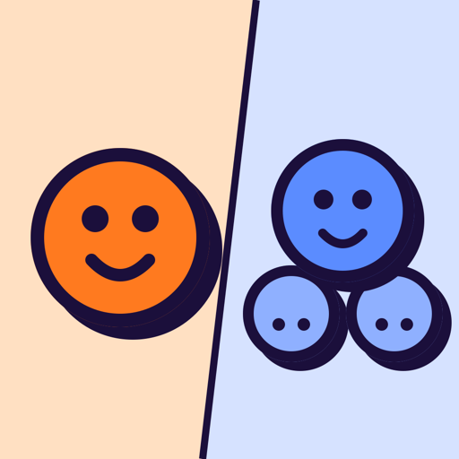

One or ManyA swipe game for iPhone that makes English singular and plural agreement automatic. Each card is a sentence with one word missing: swipe left for the singular form, right for the plural. Right answers score points, and fast right answers score the most.
The box of chocolates ___ on the table.
← is · one are · many →
Miss it, and the card comes back with the real subject highlighted (The box) and a one-line reason. Then you swipe it the right way, so the last thing your hands do is the correct move.
Knowing a rule and using it mid-sentence are different skills. Many English learners get "the cars are" right on a worksheet but still say "the cars is" in conversation. One or Many trains the fast answer: a speed bonus drains while you think, streaks multiply your points, and timed modes push the clock a little faster every few cards.